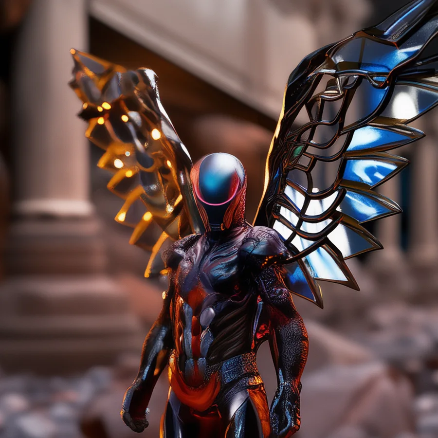
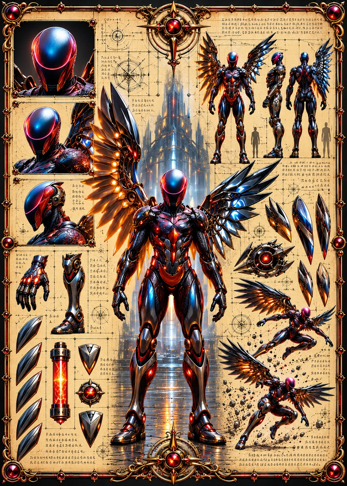

©
©
GENEZYS ARCHIVE · Earth 1 · Legionnaire
Irikor
Prism Savant

Archive record
Irikor spent years alone studying how light breaks: through ice, through glass, through armor. The Gleam Arc is the answer, a scatter of embers that finds the seam in any defense. When the Beacon calls, the Vanguard will need someone who knows exactly where to strike.
Combat signature
Gleam Arc
210 Cosmara
140 Animus
170 Vitalis
Scatters embers through defense: Reduces the target's Cosmara by 90 and deals 60 pierce damage.
Genezys 01:02 ™&©2026LEGIONS
